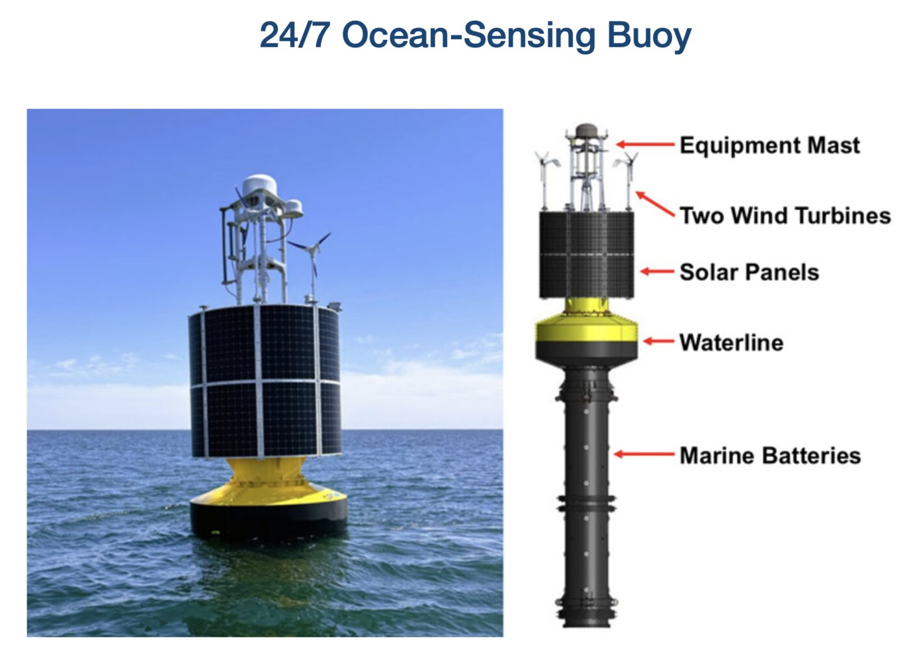
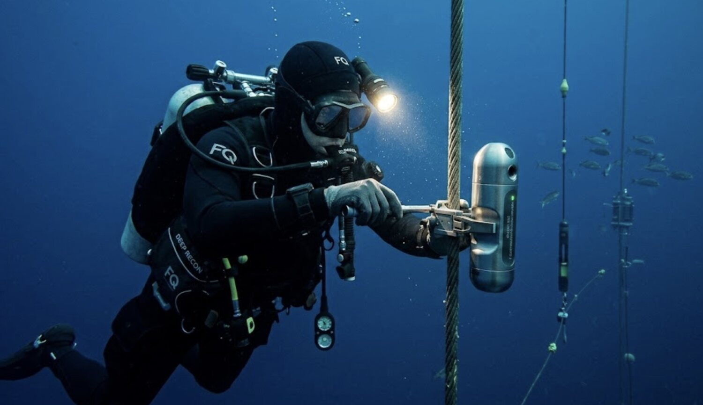
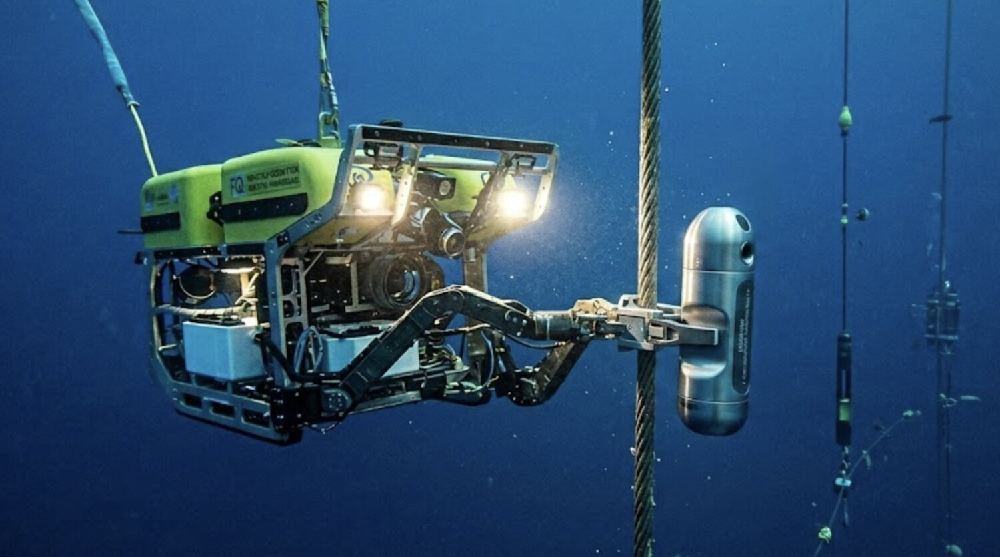

Side project
In progress
Stanford Civil Engineering · Naval Postgraduate School
Getting sensors onto a mooring cable without sending a diver down.
RoleRobot automation algorithm development
WithStanford Civil Engineering, Naval Postgraduate School
PlatformNPS/OPT/AT&T PowerBuoy
StatusEarly — scoping the task
The job today
Every instrument on that line was put there by hand.
The buoy senses the ocean around the clock from a moored line, but servicing it is entirely manual. Either the whole assembly is winched to the surface, or a diver swims down and clamps the instruments onto the cable. Both are slow, and one of them puts a person in the water.



So the question is a narrow one, which is why it stays a side project: can a robot carry an oceanographic sensor down a mooring cable, position it, and clamp it on — well enough that nobody has to make that dive?
It is the same problem the manipulation work is aimed at, in a different setting. A cable is a compliant, moving target in open water, and the vehicle holding the tool is being pushed around the whole time.
The control problem underneath it.
Holding position and manipulating while the water moves you is the main project.